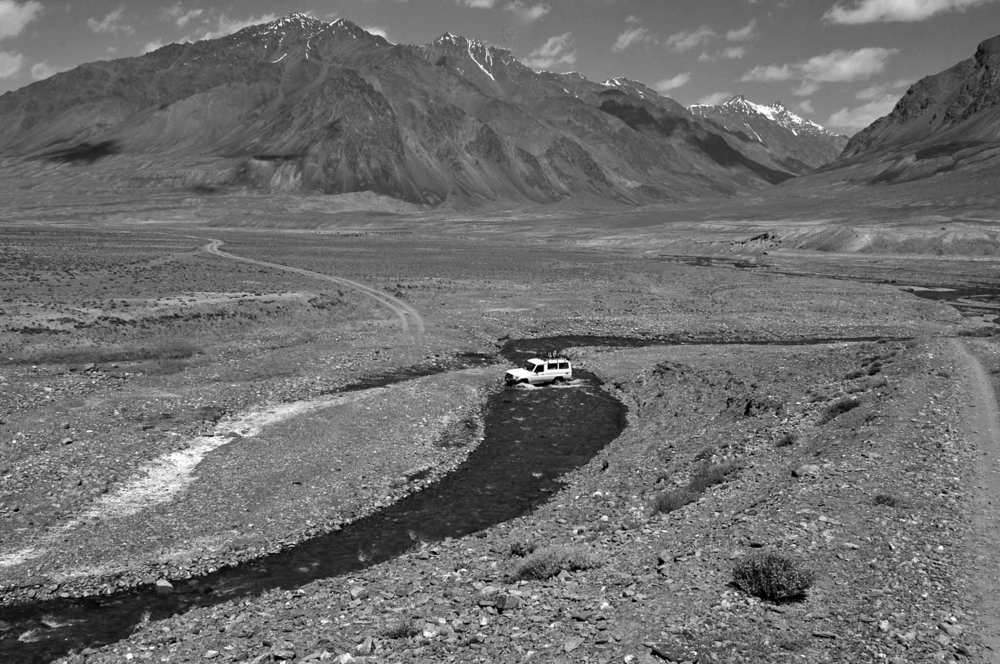

Over coffee.
People aren't resumes. They aren't titles. They aren't LinkedIn profiles. They're stories. So, if we sat for coffee and you wanted to hear mine, it would go something like this.
- 1977: Born in the USA. NJ. They still pump gas for you there. Grew up in the U.S. Virgin Islands.
- 1982: I get a dog. He was my best friend growing up.
- 1989: Hurricane Hugo takes the house. Sixth grade on the next island over with my dad.
- 1990: First job. Dishwasher at my dad's restaurant. Bought a camera with the money.
- 1991: Move to West Palm Beach then to NJ.
- 1993: Move to Key West. I became a conch. Somehow I graduated high school.
- 1996: Walked into The Breakers of Palm Beach as a server. I was 18. I'd be there for eight years. Lots of growing up. Almost fired twice.
- 2001: The Breakers let me build a restaurant. L'Escalier from the ground up. We won the AAA Five Diamond Award.
- 2003: Enlisted in the U.S. Army. Special Forces pipeline. Two weeks after we invaded Iraq.
- 2004: Brandi and I officially start. Three boys over the next few years.
- 2005: Earned the Green Beret. Moved to Colorado Springs.
- 2003–2011: Four deployments. Iraq. Central Asia. Some other stans.
- 2011: BR Guest Hospitality. Lots of restaurants in New York.
- 2013: Boca Raton Resort & Club. Hilton. Blackstone.
- 2015: Moved to Chicago. Built and opened the Conrad. First employee.
- 2017: Moved to NYC. StuyTown. Turned it into Beam Living. Grew to 15,000 apartments.
- 2020: Also took on LivCor. Grew it to 175,000 apartments. Middle of COVID. Gosh.
- 2022: Brandi starts her own thing. Mental health. Military focused. Just great.
- 2025: SafetyCulture. 25,000 customers. Global. Software for the frontline. Love that mission.
- 2026: Based in New York City. Three dogs, a cat, and a tortoise (not a turtle).
I grew up on an island. No shoes. A kid and his dog. It was as good as it sounds. At least that's how I want to remember it. But hurricanes were part of it too. Hugo took our house when I was 12 and I moved to the next island over to live with my dad. He had a restaurant called the Delly Deck. It's still there. He's not. I washed dishes. I made $340 something. I bought a camera. That was the beginning of everything, probably.
I've been working since I was a kid and I've never really stopped. Lots of different jobs over the years. And relationships. Every role came from a relationship. Every single one. Even the army, in a way. My grandfather was a Colonel. WWII, Korea, Vietnam. Retired to a small farm in the Blue Ridge Mountains. Married 65 years. Grandkids eating tomatoes like apples on a little green hill. I think I'm just trying to be him when I grow up.
Leave people and places better than you found them. Unofficial family motto. It started at that hotel we built in Chicago. Years later a colleague gave me a sign that says that and we hung it in the house. That's what we try to do. I think part of that came from my time at The Breakers. I was 18 when I started. I almost got fired. Twice. But I learned what happens when you build the team, give them the expectations, processes, voice, and care. You find out that team has superpowers. I can still hear the click of the heat lamp. The glance from a teammate across the room. The nod to the table we needed to clear. Words that didn't need to be said.
In the army it became something deeper. We, not me. Finally understanding there are worse things happening to better people. When you spend time with the Peshmerga (those who face death) and the Tajiks and the Afghans you see so much more. When you accept that you're all just making it up as you go, you can check your ego. Humans. Strengths. Weaknesses. Hopes. Dreams. Together. From then on it was clear I had to do things with people that matter to me and work on things that matter. People to my left and right. Mission. With a team.

I sat on the floor of my office on day 39 at the Boca Raton Resort. Blue handwriting on a whiteboard. 67 projects. My good friend who hired me told me to do nothing for 90 days. I didn't want to let him down. But there I was. Palm trees outside. Valets opening and closing doors. A Sunday. I could feel my heart beating. There was no way we could do all of this. But we had to if we were going to win.
Then I said out loud: do what you can every day. If we get 1% better each day, it compounds. That became Better Today Than Yesterday. We pronounce it Betty. That's how I try to run my life now. I write about it here. Just get a little better. And help others do the same if you can.
At LivCor we had 175,000 apartments. Lots of apartments. But really people's homes. Where babies come home, birthdays are celebrated, and hard days are felt. Around that dinner table. We didn't do a single eviction during COVID. For two years. We built a team of Good Neighbors. Kind. Helpful. Thoughtful. Respectful. I think we showed that you can do well and do good at the same time.
My time with Blackstone was over 12 years. In the room with some of the smartest people I've ever worked with. And people that really cared about doing the right thing. We always tried to do the right thing. For our guests, residents, and team. When I left for SafetyCulture, someone said “if it's a dumpster fire, come back.” That's what 12 years earns you, I guess.
A buddy and I go on adventures. Usually we each bring a kid. A few thousand photos in a couple days. Plus humans that love each other in a car for 12–16 hours finding things. Discovering. We do things like circumnavigate Iceland in four days. Searching for hot springs. And light. And almost getting taken out by a blizzard. We have rules:
1. The only plans you can make is where you sleep.
2. You must see sunrise and sunset.
3. You get extra credit if you eat a meal with someone who doesn't speak the same language as you.
4. Behave like a dog. If there's water, swim. Grass, roll in it. A window, stick your head out.
5. And whatever you do, purchase “give them the keys and get back on the plane” insurance. One or two rental cars have not fared well on the adventures.
My partner in all of this is Brandi (AKA Princess Buttercup). We met at The Breakers. Three boys. They're tough (21, 19, 15). Fighters. They keep getting better and that's fun to watch. It's not all perfect, but accepting that has been important.
Four years ago Brandi decided to do her own thing. She and her partner built a mental health company. Focused mostly on helping military folks and their families. A few dozen therapists. Building is hard. Gosh it's hard. But they are relentless. And care about each other. And the mission. And their humans. Their focus on helping other people win is how they are going to win. I know it.
Things I think about a lot:
Light. I still love taking photos.
Creating things.
Getting better.
Getting out of my way.
Being useful. Helpful.
Not wasting it. Whatever it is.
Dropping my money stories.
How to be grandad.
Being satisfied.
How to make sure the kids win. And know they are loved. That's what I really care about.
And whether the tortoise actually likes us or just tolerates us.
If any of this resonates, or if you want to talk about teams, building, photography, or anything else, I'm easy to find. Warning, everything has an asterisk. Could be right, could be wrong. I'm just making it up as I go.
Last updated 8 March 2026